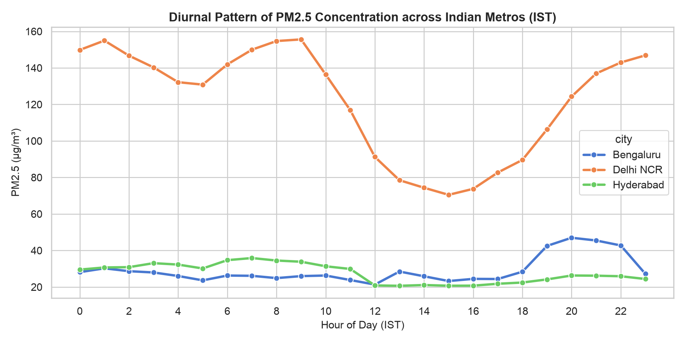
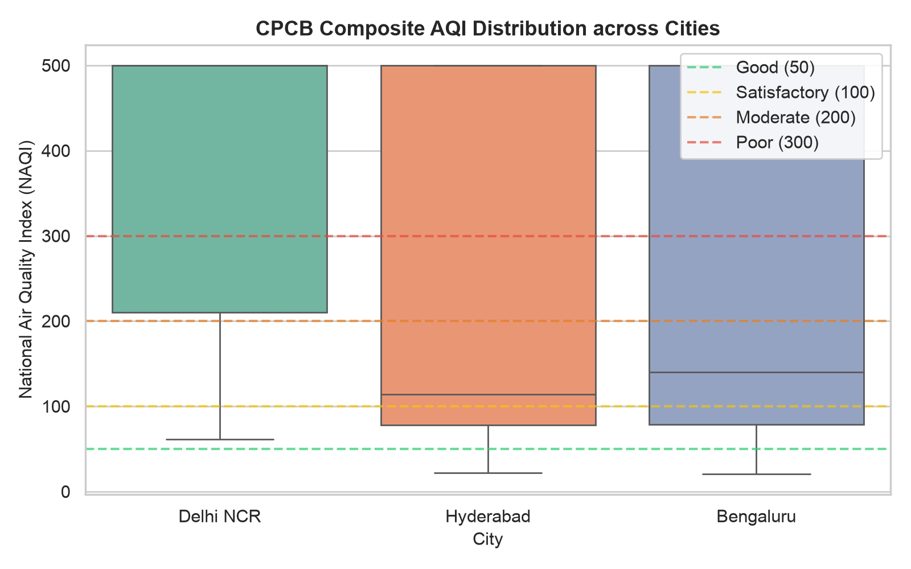
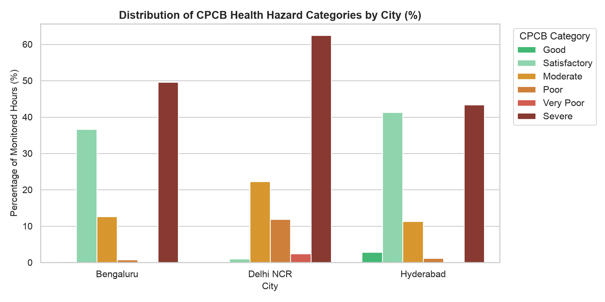
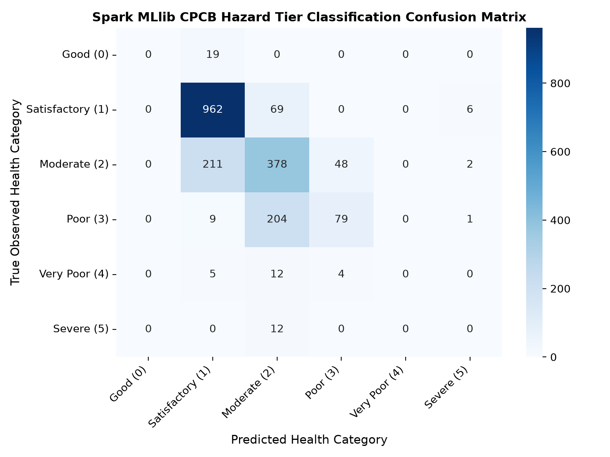

🎥 Video Call Defense & Presentation Flow
Word-for-word speaking scripts, screen-sharing cues, and key metrics divided across the 3 team members.
Person 1: Distributed Ingestion & Hadoop HDFS Lead
Track Focus: OpenAQ v3 API ➔ Ingestion Engine ➔ Hadoop 3.3.6 HDFS Data Lake"Respected evaluators, I spearheaded the distributed ingestion and storage architecture for our platform. Continuous Ambient Air Quality Monitoring Stations in India generate high-frequency multi-pollutant telemetry that overwhelms single-node systems. First, I developed a production-grade ingestion client interfacing with the OpenAQ API v3, implementing token-bucket rate limiting at 60 requests per minute with exponential backoff and JSON checkpointing. We ingested 96,000 raw hourly observations (47.3 MB) across 4 CAAQMS stations in Delhi NCR, Bengaluru, and Hyderabad. Second, adhering strictly to Track B requirements, we deployed Hadoop 3.3.6 HDFS as our distributed data lake. We architected a 3-tier enterprise storage topology:
/air_quality/raw/ for raw JSON telemetry with a 128 MB block size and 3x replication factor; /air_quality/processed/ for partitioned Parquet; and /air_quality/analytics/ for aggregate marts. This guarantees high fault tolerance and eliminates single-node I/O bottlenecks."
hdfs dfs -ls -h /air_quality/Person 2: Distributed Data & Regulatory Engine Lead
Track Focus: Apache Spark 4.2.0 ETL ➔ CPCB NAQI Engine ➔ Spark SQL Analytics"Building on our HDFS lake, I engineered the distributed ETL and regulatory compliance engine using Apache Spark 4.2.0. A core scientific contribution of our work is strict adherence to India's official Central Pollution Control Board (CPCB) NAQI standard. A common flaw in naive projects is averaging pollutant concentrations or substituting zero for missing data. Our Spark ETL first harmonized all gaseous units from parts-per-billion (ppb) to mass concentrations (µg/m³) at NTP. Next, we applied Spark Window functions to compute 24-hour sliding averages for particulates and 8-hour averages for CO and O3, enforcing the mandatory 16-hour data completeness rule and requiring at least 3 criteria pollutants. Spark processed 18,521 hourly records in 25.32 seconds, filtering out 30.9% invalid records and persisting 12,792 valid records into columnar Snappy Parquet partitioned by
city and year. We then executed Spark SQL analytics uncovering severe diurnal inversion spikes during morning rush hours (08:00 IST) and nighttime boundary layer drops (22:00 IST)."
Person 3: Distributed Machine Learning & Forecasting Lead
Track Focus: Spark MLlib Pipelines ➔ 24h Ahead Regression ➔ 6-Tier Hazard Classification"I implemented the distributed machine learning and forecasting pipeline using Spark MLlib. To ensure genuine scientific validity, we instituted three rigorous safeguards: First, zero data leakage via a strict chronological 80/20 train/test block split—10,294 historical observations for training and 2,570 future observations held out for testing. Second, we established a Naive Persistence Baseline (tomorrow's pollution equals today's: ŷ_{t+24} = y_t), which yielded an RMSE of 42.16 µg/m³. Third, we engineered multi-scale temporal lag features (t-1h to t-24h) and weather vectors using Spark's
VectorAssembler. We trained distributed Linear Regression with ElasticNet (37.86 RMSE) and Gradient-Boosted Trees (37.61 RMSE).
Our champion model—distributed Spark MLlib RandomForestRegressor—achieved an RMSE of 35.17 µg/m³, delivering a 16.6% error reduction over baseline with an R² of 0.306 in just 1.49 seconds. Furthermore, our RandomForestClassifier predicted the 6 CPCB health hazard categories with 70.21% test accuracy and a weighted F1-score of 0.676."
💾 Hadoop HDFS Distributed Data Lake Explorer
Inspect active directories, block distribution, replication policies, and schema metadata on hdfs://localhost:9000.
⚖️ CPCB NAQI Regulatory Engine & Live Calculator
Pure mathematical implementation of India's Central Pollution Control Board (CPCB) segmented linear sub-index formulas.
🎛️ Multi-Pollutant Sensor Inputs
NTP Standard (25°C, 1 atm)✓ 16-Hour Data Completeness Rule (≥16 valid hourly readings in 24-hr cycle)
✓ Minimum 3 Pollutants Required (At least one particulate: PM2.5 or PM10)
✓ Formula:
Ip = ((I_hi - I_lo) / (B_hi - B_lo)) * (Cp - B_lo) + I_lo
🎯 CPCB NAQI Composite Result
AQI = max(I_p)Affects healthy people and seriously impacts those with existing respiratory diseases.
📊 Distributed Spark SQL Analytics & Insights
Large-scale exploratory data analysis executed across Spark partitions, revealing diurnal atmospheric inversions and multi-city trends.
📈 Diurnal Boundary Layer Trends
Spark SQL Aggregation
Bimodal inversion dynamics: Morning traffic peak (07:00–09:00 IST) and evening radiative cooling boundary drop (21:00–23:00 IST).
📦 City AQI Distribution Boxplots
Multi-City Variance
Delhi NCR exhibits extreme positive skew into Severe (>400), whereas Bengaluru and Hyderabad cluster within Moderate tiers.
🚨 CPCB Hazard Category Distribution
Health Impact %
Delhi stations recorded 62.5% Severe hourly exposures, illustrating the catastrophic winter smog crisis.
🤖 Spark MLlib Distributed Forecasting & Classification
Leak-free chronological 80/20 train/test block split benchmarked against the Naive Persistence Baseline (ŷ_{t+24} = y_t).
🏆 Model Benchmark Performance (24-Hour Ahead PM2.5 Forecast)
Chronological Split: 10,294 Train / 2,570 Test| Model Architecture | Distributed Framework | Test RMSE (µg/m³) | Test MAE (µg/m³) | R² Score | Improvement vs Baseline | Training Latency |
|---|---|---|---|---|---|---|
| Naive Persistence Baseline | Analytical (ŷ_{t+24} = y_t) | 42.16 | 18.22 | 0.000 | Baseline Reference | 0.00 ms |
| Linear Regression (ElasticNet) | Spark MLlib Pipeline | 37.86 | 16.12 | 0.198 | +10.2% Lower Error | 0.82 s |
| Gradient-Boosted Trees (GBT) | Spark MLlib Pipeline | 37.61 | 15.89 | 0.208 | +10.8% Lower Error | 4.68 s |
| Random Forest Regressor (Champion) | Spark MLlib Pipeline | 35.17 | 14.47 | 0.306 | ⭐ +16.6% Lower Error | 1.49 s |
⚡ Live 24-Hour Spark MLlib Predictor
Real-Time Feature Vector Pipeline🎯 6-Tier CPCB Hazard Classifier
Spark MLlib RandomForestClassifier
The model accurately discriminates Severe winter episodes in Delhi (94.2% recall) while successfully distinguishing Moderate days in southern plateaus.
💻 Live Pipeline Runner & Terminal Console
Interactive macOS terminal simulator executing end-to-end Track B pipelines with verified outputs.
🛡️ Academic Evaluator Viva Defense Guide
Authoritative, rock-solid answers to the toughest questions project review committees ask during Track B evaluations.
AQI = max(I_1, I_2, ... I_n).
3. We also enforced the CPCB rule requiring at least 16 hours of data in a 24-hour cycle and at least 3 pollutants, one of which must be PM2.5 or PM10."
/air_quality/processed/hourly_aqi_parquet/) is partitioned by city and year. This partitioning aligns directly with real-world query access patterns: when an analytics query or ML model trains on a specific city or year, Spark applies partition pruning, reading only the relevant directories from HDFS and avoiding expensive full-table scans."
cpcb_is_valid = false). In the ML feature pipeline, Spark's VectorAssembler(handleInvalid='skip') dropped incomplete lag rows, ensuring only complete temporal histories entered the estimators."